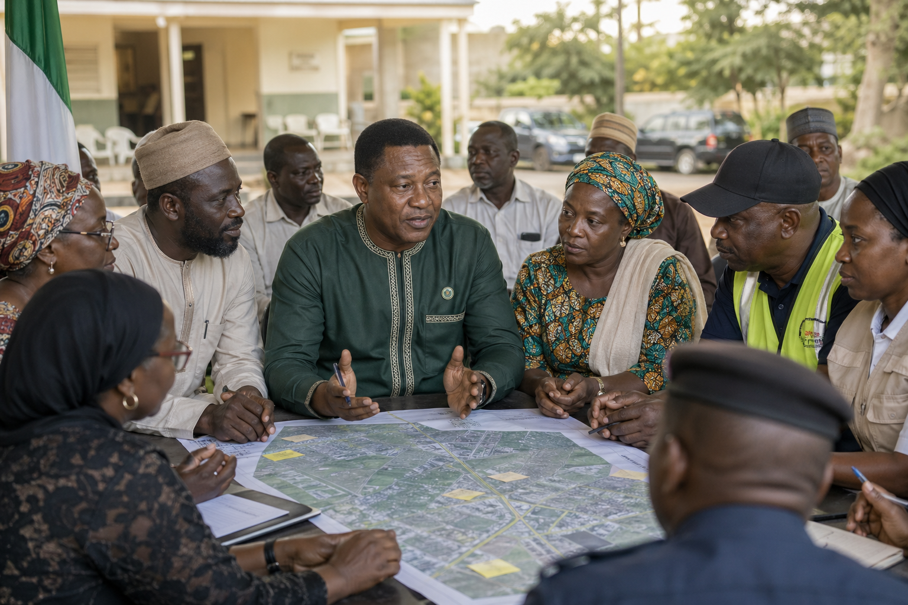

Jobs and enterprise
Back Abuja's traders, artisans, tech workers, and young entrepreneurs with skills, credit access, and market infrastructure.
Democratic Front Congress | Abuja FCT
A practical voice for Abuja: safer communities, better jobs, stronger schools, and accountable representation in the Senate.
Ciroma Chukwuma Adekunle is running to represent the Federal Capital Territory with a Senate office that listens across Abuja Municipal, Bwari, Gwagwalada, Kuje, Kwali, and Abaji.
Back Abuja's traders, artisans, tech workers, and young entrepreneurs with skills, credit access, and market infrastructure.

02Strengthen lawful community policing, emergency response, lighting, and local intelligence partnerships across the FCT.
Expand scholarships, technical colleges, digital literacy, teacher support, and school improvement partnerships.
Publish Abuja constituency updates, project tracking, open town halls, and regular area council office hours.
The DFC campaign is organizing volunteers, professionals, student leaders, market associations, faith communities, transport groups, and local advocates around one simple standard: Abuja must be heard.
Volunteer, host an area council conversation, request campaign materials, or invite the team to a community meeting.